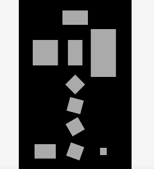

Shapeの回転
Shapeの回転角度指定には複数の方法があります。どちらの場合も 度=degreeで指定します。
rotaitionプロパティに直接指定
// Shapeを作成してシーンに追加
var shape = Shape().addChildTo(this).setPosition(320, 480);
// 回転指定
shape.rotation = 45;
setRotation関数で指定
setRotation関数を使うと、生成から一気にチェインメソッドで繋げて書くことができます。
var shape = Shape().addChildTo(this).setPosition(320, 600).setRotation(15);
Shapeのコンストラクタで指定
位置などと一緒にコンストラクタでも指定できます。
var shape = Shape({
x: 320,
y: 720,
rotation: 60
}).addChildTo(this);
回転アニメーション
Shapeのupdate関数でプロパティrotationの値を変更することで、回転アニメーションをさせることができます。
// スプライト回転
shape.update = function() {
shape.rotation++;
};
サンプルコード
// グローバルに展開
phina.globalize();
/*
* メインシーン
*/
phina.define("MainScene", {
// 継承
superClass: 'DisplayScene',
// 初期化
init: function() {
// 親クラス初期化
this.superInit();
// 背景色
this.backgroundColor = 'black';
// 回転
var shape5 = Shape().addChildTo(this).setPosition(320, 480);
// 回転指定
shape5.rotation = 45;
// setRotation
var shape6 = Shape().addChildTo(this).setPosition(320, 600).setRotation(15);
// コンストラクタ
var shape = Shape({
x: 320,
y: 720,
rotation: 60
}).addChildTo(this);
var shape7 = Shape().addChildTo(this).setPosition(320, 860);
// 回転アニメーション
shape7.update = function() {
shape7.rotation++;
};
},
});
/*
* メイン処理
*/
phina.main(function() {
// アプリケーションを生成
var app = GameApp({
// MainScene から開始
startLabel: 'main',
});
// fps表示
//app.enableStats();
// 実行
app.run();
});